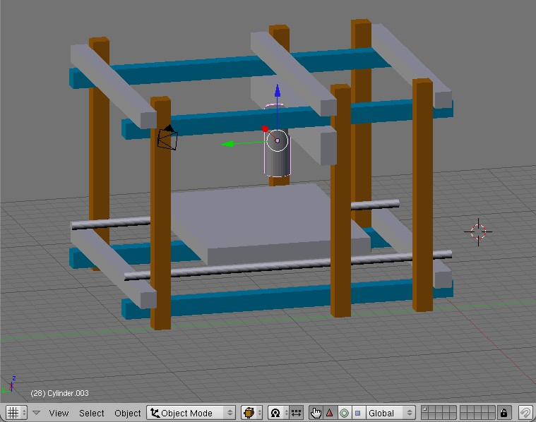

frames revision 388
Profile
Replimat frames are constructed of individual frame sections with a square profile or cross-section. Frame sections may be solid or hollow, constructed from a single piece or laminated or joined cut sheet. All Replimat frame sections share the same width, which is 1.5 inches (38.1 millimeters) across each side. Frames of larger or smaller widths may be produced, and continue to work with all of the construction techniques found here.
Hole Pattern
Holes are centered on each face of the frame and spaced regularly in a repeating pattern at a distance equal to the width of the frame. This geometrical arrangement allows the frame members to reliably produce rigid joints in three dimensions.
Lengths
Frame lengths are intentionally limited to 2, 3, 4, 5, 10, 15, 20, 25, 30, 35, 40, 50, 60, 80, and 100 holes per side. These lengths have been chosen to allow for the creation of all necessary joint configurations (using lengths 2, 3, 4, and 5) as well as to allow for lengths with a center hole and lengths which are evenly divisible by two. The reduced set of lengths allows for improved reuse from project to project, easier identification in photographs and diagrams, and simpler production, handling, and shipping.
Nuts and bolts
Frame sections are joined together using three lengths of bolt, suitable for 1, 2, or 3 stacked frames and share a single size washer and nut.
Tools
Frame assembly requires two 13mm wrenches. A socket wrench or battery powered electric socket wrench are highly recommended for quick and easy [dis]assembly.
Joints
Three frame sections can be joined with three nuts and bolts to form a strong three dimensional joint orienting each frame section perpendicular to the others, called a tri-lapping joint or tri-joint. Other joining techniques allow for triangular and hinged joints, which are sufficient to build several useful linkages including the Peaucellier–Lipkin linear motion linkage, Jansen’s linkage, leading link suspension, and more.
Source
Steel / Aluminum
United states
*Any construction steel supplier.
- 8020 Inc
- Bosch Rexroth Profiles
- item Aluminum Profiles (the original)
- MK Aluminum Profile System
- McMaster
- Telespar 2"
- Unistrut Telespar Ohio
Canada
*Any construction steel supplier.
*Unistrut
UK
*Any construction steel supplier. (Undrilled)
New Zealand
<sbailard_> VikOlliver, steel and aluminum box section down in NZ, is it metric, or '25.4 mm'?
<VikOlliver> Strangley it's in approx 25mm increments...
- sbailard_ is beside himself in surprise.
<VikOlliver> It's sold as 25x50mm box section but you know what they mean...
Wood
Warning
In North America, ^ tag ^^
| wood || which is called '1x1' or '2x2' is actually smaller than 1 inch or 2 inches in cross section. This is unfortunate but legal. Speak to a lumber yard or other supplier about getting 'wood which is actually sized 1 inch by 1 inch or 2 inches by 2 inches'. They will be able to help you, possibly by setting up a small order correctly sized material with a local mill, which may be a quick job. (If you are a woodworker, this paragraph is obvious, and we apologize. And you have a table saw.)
Imperial
*1"x1" or 2"x2"
Metric
18mm x 18mm or 44mm x 44mm (Metric)
Back in the our imperial days these would have been called 1"x1" & 2"x2"
Which should have been 25.4mm x 25.4mm and 50.8mm x 50.8mm now its shown as its true size in mm.
Wood Construction Debris
It's plausible that we can use Eiffel or similar to mill construction debris wood down to 1"x1".
It's plausible that we can use Eiffel or similar to mill construction debris wood down to
*1"x1" or 2"x2" (Imperial)
*18mm x 18mm or 44mm x 44mm (Metric)
A common so-called "two-by-four" (38 mm x 89 mm, 1.5 inch x 3.5 inch)
can be ripped and planed into two separate grid beams (each 38 mm square).
Does it make any sense to do slightly less work, converting that so-called "2x4 board" into one beam that acts like those 2 grid beams permanently attached to each other, 38 mm x 76 (1.5" x 3.0") with a double row of holes on the 3.0" wide side?
Notes
*Nails - After checking carefully with a nail finder.
*Grit - Use a stiff plastic brush to clean off your wood. Stone pebbles will chip your saw blade.
Similar Construction Systems
Dexion Speedframe
This is a high-strength shelving system made from cheap steel square tubes and unimportant but elegant interconnectors.
The tubes are a lovely 1" (25.4mm) square x 10 ft (3048mm aka '3m') long.
*Speedframe (1" square x 3048mm long) x 1 length
£20.00 per 3m length
http://www.tradesystems.co.uk/acatalog/Dexion-SpeedFrame-25mm-Square-Tube-System.html?gclid=CO20puGvvJ4CFQQMDQodVCn5Cg
*'''Buy Used!''' Shelving outlives many a business plan, so check your telephone directory under 'shelving/racking'.
You may get lucky, and pay £10/3m rather than £20/3m.
http://shop.instant-shop.com/stodec/category740226.html
*Used/offbrand
http://www.richardsonsuk.co.uk/productdetails.php?product=74
T-Slot is one of the most popular categories of extruded aluminum --
VSlot,
fischertechnik aluminum beams,
80/20 beams,
MakerBeam,
OpenBeam,
MicroRAX
--
see T-Slot for more details.
{{:doboz_repstrap.jpg|aluminum L rails: Doboz}}</code>
MakerSlide is an open source aluminum extrusion with a built-in V-rail linear bearing system.
The Deltic3D, ORD bot, Freedeepee, CNC Router, etc. all use MakerSlide as part of their drive train.
- official site: http://www.inventables.com/technologies/makerslide
- "Kickstarter: MakerSlide Open Source Linear Bearing System"
YesRail, apparently designed for the P2f RepStrap, is a rail system "based on Open Rail and MakerSlide".
OpenRail: ''Linear V rail universal mounts to t-slot extrusion''
*http://www.3ders.org/articles/20120610-open-rail-an-open-source-universal-linear-rail-system.html
*http://openbuildspartstore.com/
aluminum L rails
RobotDigg
- http://www.robotdigg.com/product/225/2020-Aluminum-Extrusion-in-Lengths
EZ Tube
- https://eztube.com
Telescoping
- https://alcobrametals.com/products/telescoping-tube/telescoping-aluminum-square-tube/6005a-t6-telescoping-square-tube
Makeblock: typically used for small desktop models
- open-source modular extruded aluminum system
- http://makeblock.cc/
- Wired: "Robotics Hacker Erects Open Source ‘Lego for Adults’"
- Kickstarter: "Makeblock : Next Generation of Construct Platform"

grid beam: square beams with a line of holes: typically used for furniture and street signs
- Eiffel mentions "pre-drilled square beams".
- square tube construction techniques
- The square metal tubes with round holes in the side pictured in "Pull Yourself Together, Bot!" look a *lot* like grid beam -- would "real" grid beam work just as well?
- http://www.gridbeamers.com/
- http://gridbeam.biz/
- http://www.alliedtube.com/sign-support/traffic-sign-posts/telespar-square.asp
- http://www.mcmaster.com/#steel-structural-tubing/=49tu63
Makeralot
- 2020 T Slotted Aluminium Extrusion
- 2020 V Slotted Aluminium Extrusion
- 2040 V Slotted Aluminium Extrusion
- 2060 V Slotted Aluminium Extrusion
- 2080 V Slotted Aluminium Extrusion
Extruded rectangular aluminum tubes:
- "Parametrically Designed XY Motion Stage", apparently part of the thesis "Rapid Prototyping of Rapid Prototyping Machines" by Ilan Ellison Moyer.
square metal tubes, that later have holes drilled only where bolts are needed, as in T-Rep 0 (the progenitor)
and Strapzilla and
<flickr>3951997454|none</flickr>
<flickr>5084805984|right</flickr>
Import from RepRap Wiki
grid beam
grid beam: 2"x2" square beams with a line of holes: typically used for furniture and street signs.
"pre-drilled square beams".
A typical piece of furniture built out of grid beam uses lots of TriLap joints.
Wooden grid beams seem easier to cut to length.
Metal grid beams seem stronger and more rigid.
Does it make any sense to use a mixture of both wooden and metal grid beams bolted together?
- Eiffel is built out of grid beam.
- Wrench-built machine appears to be built out of grid beam. A RepStrap built mostly out of 1" square perforated tube. ''(Is this a Eiffel or something else?)''
- RBS and Eiffel suggests that a kind of RepRap could make grid beam out of lumber.
- RBS/Beam
- square tube construction techniques; Grid Beam
- The square metal tubes with round holes in the side pictured in "Pull Yourself Together, Bot!" look a *lot* like grid beam -- would "real" grid beam work just as well?
- http://www.gridbeam.com/
- http://www.gridbeamers.com/
- http://gridbeam.biz/
- http://www.alliedtube.com/sign-support/traffic-sign-posts/telespar-square.asp
- http://www.mcmaster.com/#steel-structural-tubing/=49tu63
Bitbeam
Bitbeam is a miniaturized grid-beam system compatible with Lego Technic, using 8mm x 8mm square beams.
http://www.makerbot.com/blog/tag/bitbeam
- Bitbeam -- BrickRap, Bitbeambothttp://bitbeam.org/2012/08/25/bitbeambot-the-complete-kit/, etc.
extruded aluminum
see Extruded Aluminum for similar aluminum materials.
OpenStructures
"The OS (OpenStructures) project explores the possibility of a modular construction model where everyone designs for everyone on the basis of one shared geometrical grid."http://www.openstructures.net/
Based on a 4×4cm square that marks cutting lines and assembly points.
Designed for disassembly, adaptation, re-assembly, and scalability.
(lots of TriLap joints in the illustrations).
Contraptor
: ''Main page: Contraptor''
- "Contraptor is a DIY open source construction set for experimental personal fabrication, desktop manufacturing, prototyping and bootstrapping. ... Contraptor is mechanically compatible with 1" T-slot ..., pegboard, 1" grid beam (such as commercially available perforated steel tube), and likely other things with dimensions standardized in 1" grid."
See Contraptor for more details.
other modular materials
{{:gluegunfabber.jpg|glue gun fabber: Is this Vik Olliver's Meccano-set based RepRap prototype?}}
- pegboard: wood sheets with a regular grid drilled into them (RBS/Grid) -- LeCorb; RBS suggests that a kind of RepRap could drill the appropriate grid pattern.
- slatwall (Is this the same as T-slots routed into MDF ?) http://kregjig.ning.com/forum/topics/i-need-t-track
- fischertechnik parts -- FTIStrap is the first RepStrap to succeed in printing 3D objects
- the "Servo Erector Set" looks like a quick way to assemble things like a Hexapod Robot CNC Router.
- LEGO -- :Category:Lego
- Erector and Meccano -- ?
- Merkur -- ?
- Pitsco TETRIX Parts -- ?
- VEX Robotics Design -- ?
- The Phenostream Robotics BuildPlate construction system looks like a quick way to assemble hand-sized robots -- ?
- The "The 1X2 connector system" -- 1X2, 1X2 Shortcat, and 1X2 Tallcat
- Plastic T-slot
(the Free Universal Construction Kit is a set of adapters for interoperability between several of the above construction "toys").
cut-to-length construction materials
metal rods
- 8 mm threaded steel rod (aka "threaded rod" or "allthread" or "M8 studding"): Many RepRaps and RepStraps use all-thread as a easily-adjustable frame material. Many also have at least one axis driven by a "lead screw" of 8 mm threaded road or nearly equivalent 5/16" threaded rod that acts as a worm gear, turned by a stepper motor, that pushes parts back and forth. A few use bigger sizes such as M12 and M10 threated rods in the BiBONEhttp://forums.reprap.org/read.php?152,128970 or smaller sizes such as the 1/4 inch threaded rod used in smaller SAE Mendel machines.
- 8 mm smooth steel rods (aka smooth rod, aka "drill rod"): Most RepRaps and RepStraps have parts that slide back and forth on 8 mm or nearly equivalent 5/16" smooth rod. A few RepStraps (^ tag ^^
| DriveTrains#rotary to linear motion conversion ||) spin a smooth rod with their motor rather than a threaded rod. A few use other sizes such as the 12 mm smooth rod used by [[hamendel|HaMendel]][[http://forums.reprap.org/read.php?152,169733]] and BiBone. "O1 drill rod" ? "A2 drill rod" ?
water pipe
- electrical conduit (~20 mm OD steel tube) -- Uconduit
- Steel water pipe and fittings -- Builders/Frank; McWire Cartesian Bot 1 2; Builders/PipeStrap; Development:McWire
- PVC water pipe and fittings -- much lighter weight and lower cost and easier to drill than metal; but is it rigid enough? XtruBot, RepRap Morgan, LISA Simpson, Easy build delta printer, etc.
** possibly using the "PVC pipe construction set" as described at "PVC Pipe Construction Gets Boost with 3D Printed Corner Connectors"
- Large-diameter PVC sewer pipe -- using 6" (or larger) nominal I.D. pipe as a tower/gantry to mount the other parts of the printer. PipeDream
other cut-to-length construction materials
- low-cost softwood dimensional lumber, roughly 18x45mm and 18x70mm (close enough to "1x2" and "1x4"), bolted together -- 1X2 and WolfStrap
- poplar planks -- Tommelise
- extruded aluminum L rails -- Doboz
- #extruded aluminum in other shapes
cut-to-shape construction materials
''Should we distinguish between cutting flat materials into a (2D) shape (perhaps with a CNC Router) and perhaps drilling a few holes into the face and edges, vs. cutting large blocks of material into arbitrary 3D shapes?''
- cut sheets without any plastic printed parts (RepStrap):
** sheet metal cut, drilled, and folded to approximate the plastic parts of a Mendel -- My Development Page Sheet Metal Mendel
** sheet metal cut, drilled, and folded in other ways -- Tony's sheet metal RepStrap
** "MDF or Ply or Perspex/Acrlic or HDPE or Aluminum" sheets -- Huxley Seedling
** laser-cut plastic (typically clear acrylic) -- Builders/LaserCut RepStraps; PonokoRepRap
** sheet plywood -- PlywoodRepRaps such as LaserCut Mendel; CupCakeStrap; CupCake ??? ; Gunstrap; DeltaTrix (http://www.deltatrix.co.uk/; http://www.instructables.com/id/DeltaTrix-3D-Printer); etc.
** foamcore -- see imoyer's Foamcore CNC Machine http://web.mit.edu/imoyer/www/portfolio/foamcore/ http://reprap.development-tracker.info/development/143002 http://www.instructables.com/id/Build-a-Foamcore-CNC/. Can this be laser-cut?
** "flat sheets of wood or plastic (currently HDPE) ... Cut ... on some 2.5D CNC router" -- Isaac, LaserCut Mendel, etc.
- hardwood cut in more or less the exact same shapes as the plastic parts of a Mendel -- Development:Wooden Mendel
- metal cut in more or less the exact same shapes as the plastic parts of a Mendel -- Development:Metal Mendel
- ??? -- Development:McWire Successor ???
- adapting an off-the-shelf milling machine -- :Category:MillStrap
- whatever random stuff I had laying around -- Builders/JunkStrap
- Hybrid: cut sheets and plastic printed parts complementing each other:
** Hybrid: Medium Density Fiberboard (MDF) or Acrylic sheet with printed brackets -- Mendel90; Prusa i3#Wood Sheet frame; Prusa i3#Box Style Frame;
** 4 mm aluminum sheet metal and printed brackets -- Orca
** 6 mm aluminum sheet metal and printed brackets -- Prusa i3#Single Sheet Frame
** Dibond: Idea lab one, Mendel90, etc.
To make future generations of self-replicating machines out of such materials seems to require a CNC Router or a Laser Cutter.
other discussions of building material
- Wikibooks: robot building materials implies that cardboard (!) is best for quick prototypes; for functional robots, "wood is probably the best material to start with."; where wood isn't quite durable enough, aluminum is the best metal -- better than steel for most robots.
** ''Is "edgeboard"https://web.archive.org/web/20100804002012/http://www.arcspace.com/gehry_new/index.html?main=/gehry_new/cardb/cardb.html the same as corrugated cardboard? It's apparently strong enough to hold up full-sized humans; is it strong enough to hold up an extruder nozzle?''
** ''Is it possible to build a FlatPack RepStrap mostly out of "Laminated Laser-cut Cardboard"http://forums.reprap.org/read.php?178,64851?''
*** Izhar Gafni has made a type of bicycle with a composite frame (''cardboard & epoxy?/some polyester?'') ("Cardboard Bicycle"). It is apparently waterproof and strong enough to hold up full-sized humans. It is definitely worth an investigation, if nothing else for the other end of the M8 threaded rod there.. are on several levels; Epoxy Granite.
<videoflash type="vimeo">37584656</videoflash>
- Some people building a relatively open-source MechMate CNC router claim that "Steel is the cheapest metal known to mankind. Buying Aluminum with equal structural properties will only INCREASE the cost".
- Stack Overflow: "Rapid Prototyping for Embedded Systems"
- User:Mrkim mentions various "Classes of machines",http://mrkimrobotics.com/?page_id=2209http://www.thingiverse.com/thing:5773 including entire classes of machines that the above seems to neglect.
- Carnesmechanical strive to create a collaborative environment to make the purchase of automotive products enjoyable for you. Carnesmechanical is a small blog, is dedicated to bringing unbiased automotive product reviews, car Electronics, auto tool, oil, electrical, welding, accessories.